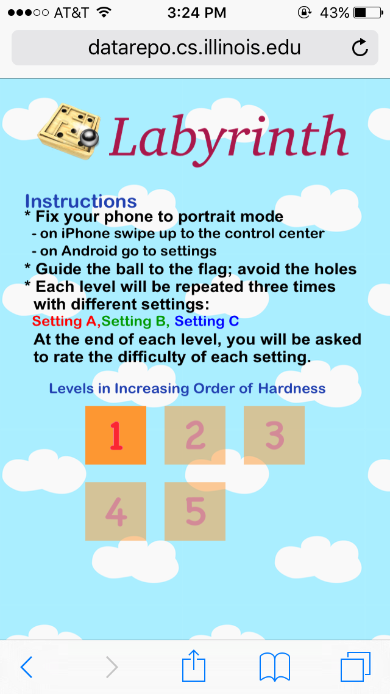
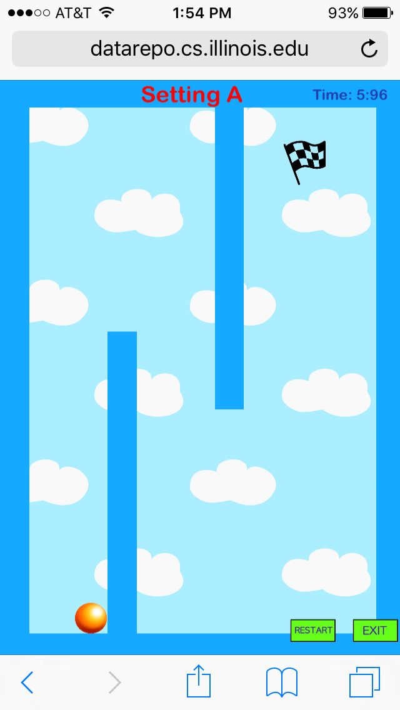
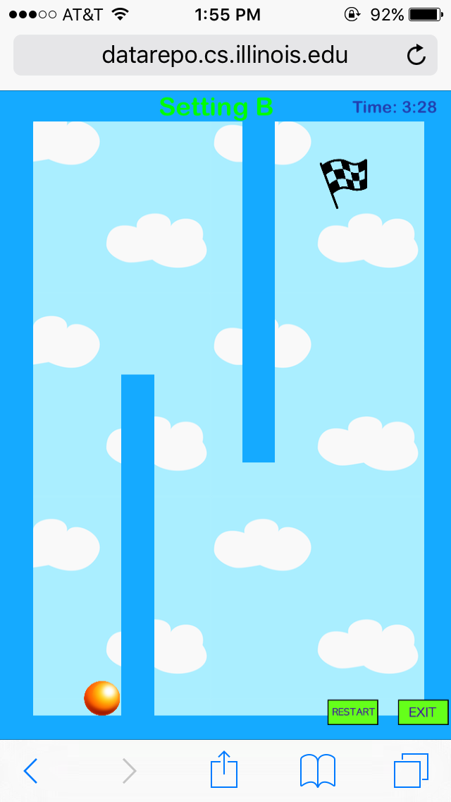
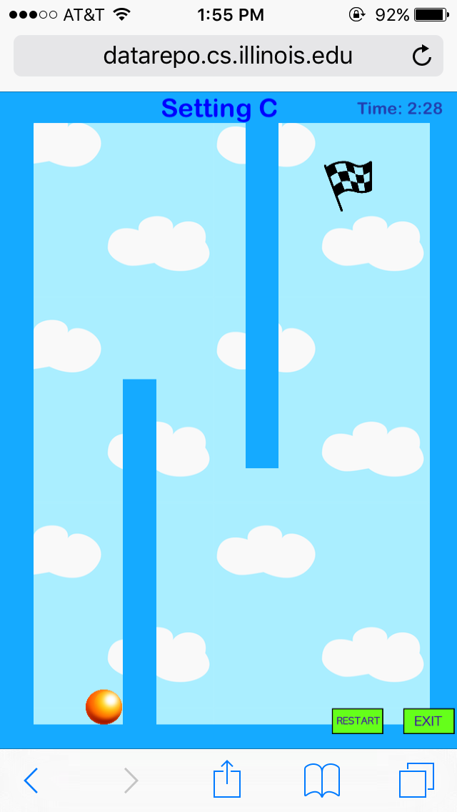
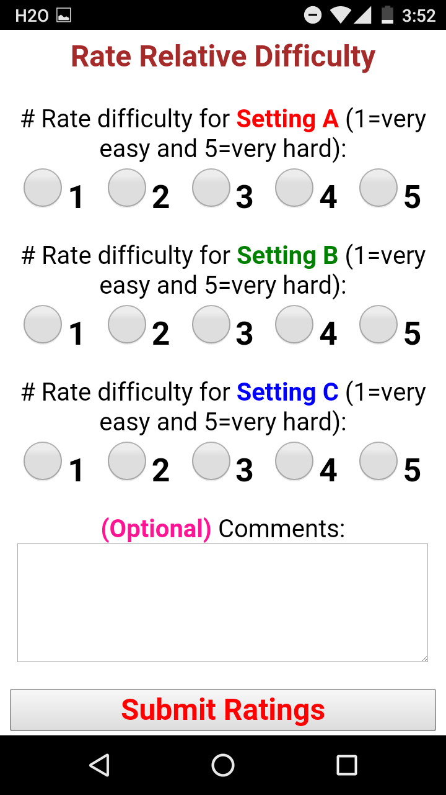
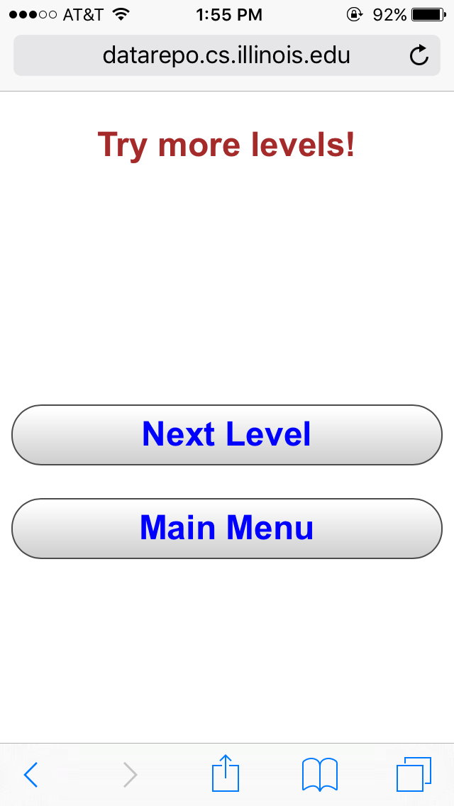

Tradeoff Between Privacy and Utility for Smartphone Motion Sensors
Project Description | Instructions for participation | Consent | FAQ
Project Description
Recently, we have shown that we can uniquely track (i.e., fingerprint) smartphones by exploiting the subtle manufacturing imperfections of embedded motion sensors like accelerometers and gyroscope. We are now exploring countermeasures against such fingerprinting techniques. Our countermeasures involve adding different forms of noise to the raw sensor data. However, doing so impacts the utility of the motion sensors. The object of this project is to analyze to what extent our countermeasure techniques impact the motion sensors. And to study this impact we have developed an online game (in collaboration with Edward Chou, an undergrad ECE student at UIUC) that uses the motion sensors. Our game can be played on the browser of any smartphone. So, participants only need to visit a web page and do not need to install any apps.
The game has a total of 5 different levels and each level is repeated under 3 different settings. Here, each setting refers to a different form of noise being added to the motion sensor and each setting is randomly assigned one of the 3 possible noise settings. Participants are expected to play each level (with 3 different settings) and provide feedback about the relative difficulty of the 3 settings.
Instructions for participation
-
Participants need to use a smartphone or tablet (preferably a smartphone).
-
Participants should read the Consent form in the following section before proceeding to the game. Once you proceed to the game you should see the following screen on your smartphone.
 -
To play the game, please fix the orientation of your phone to portrait mode. You can do this in one of the following ways:
- On iPhone swipe up to the control center.
- On Android go to 'Settings' and then 'Display'.
-
If the game does not start please try refreshing the page a couple of times. Also please do not browse in private mode or disable cookie.
-
The goal of the game is to guide the ball through the maze to the finishing flag.
-
The game has a total of 5 levels in increasing order of difficulty. Levels are revealed one at a time as each level is completed. Each level is repeated 3 times under different noise settings:
- Setting A
- Setting B
- Setting C
The setting information is available at the top of the page as shown below:
 -
At the end of each level you are asked to rate the relative difficulty of Setting A, Setting B and Setting C as shown below:
 -
Once you submit your ratings you can either try out the 'Next Level' or go to the 'Main Menu' to retry any of the previous level(s).

We request participants to complete all 5 levels as this will provide us with the full picture.
Consent
You are invited to participate in a research study on how users react to different forms of noise injection into motion sensors on smartphones. This study will take approximately 5-10 minutes of your time. You will be asked to play a game consisting of 5 different levels where each level is played under 3 different settings. At the end of each level you will be asked to rate the relative difficulty of the 3 settings. The objective of the survey is to understand to what extent different privacy preserving techniques impact the utility of motion sensors in smartphones.
Your decision to participate or decline participation in this study is completely voluntary and you have the right to terminate your participation at any time without penalty. If you do not wish to participate in this study just close this browser window.
Your participation in this research will be completely confidential. In general, we will not tell anyone any information about you. When this research is discussed or published, no one will know that you were in the study. However, laws and university rules might require us to disclose study information. For example, if required by laws or University Policy, study information may be seen or copied by the following people or groups: a) The university committee and office that reviews and approves research studies, the Institutional Review Board (IRB) and Office for the Protection of Research Subjects, or b) University and state auditors, and Departments of the university responsible for oversight of research. Also data will be averaged and reported in aggregate. Possible outlets of dissemination may be a research article submitted to a conference. Although your participation in this research may not benefit you personally other than providing temporary entertainment, it will help us understand to what extent our countermeasure techniques can thwart smartphone fingerprinting and thus protect user privacy.
The study is conducted anonymously and we are not tracking any email, IP address or other identifiable information. We are only tracking the response of each user by inserting a pseudo-random number inside the cookie of the browser. Survey results are stored in a server residing behind campus firewall. Our project obtained IRB approval.
You may contact us with any questions or suggestions about this project.
If you have any questions about your rights as a participant in this study or any concerns or complaints, please contact the University of Illinois Institutional Review Board at 217-333-2670 or via email at irb@illinois.edu.
Please print a copy of this consent form for your records, if you so desire.
I have read and understood the above consent form, I certify that I am 18 years old or older and, by clicking the following link Labyrinth, I indicate my willingness to voluntarily take part in the study.FAQ (Frequently Anticipated Questions)
- How long will this take?
- What kind of platforms and browsers are supported?
- How much bandwidth is used for uploading survey data?
- Where is the data stored?
- What is being measured and why?
- Chrome
- Safari
- Opera
- Firefox